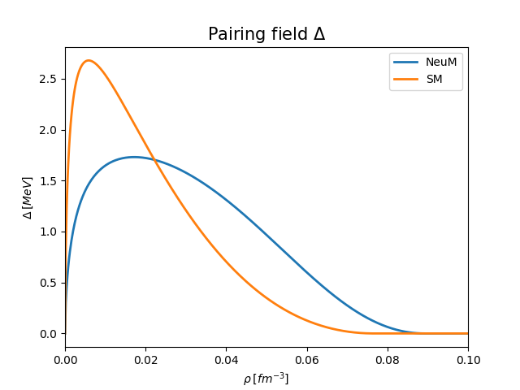
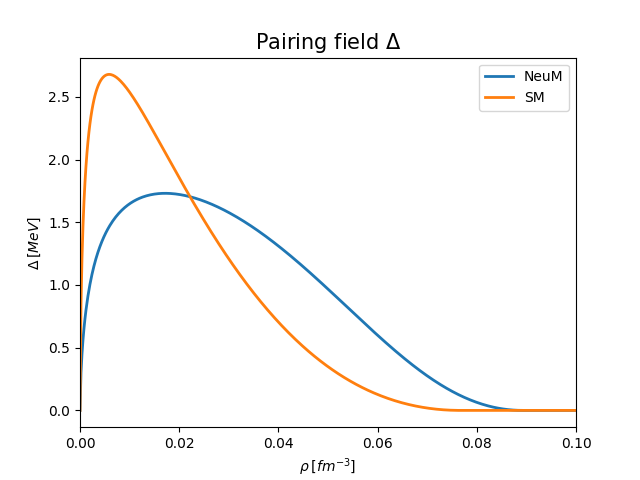

Module: BSk
The functions are listed below in alphabetical order. Here, please find those functions regrouped by topic:
Pairing
 

{kind=link}
Move
Statistics
derivative_epsilon_rho_n()
derivative_pressure_rho_n()
Effective mass
Mean field
Density energy functional
Auxiliary
{kind=link}
Todo
Describe properties
Todo
Give references
Module: BSk
The module that contains Brussels-Montreal parametrization with formulas for energy density, effective masses, etc. Both for uniform system and general expressions.
BSk31 Skyrme Parameters
The following table lists all Skyrme parameters used in the BSk31 functional:
Parameter |
Value |
Unit |
|---|---|---|
t₀ |
-2302.01 |
MeV fm³ |
t₁ |
762.99 |
MeV fm⁵ |
t₂ |
0.0 |
MeV fm⁵ |
t₃ |
13797.83 |
MeV fm⁽³⁺³ᵅ⁾ |
t₄ |
-500.0 |
MeV fm⁽⁵⁺³ᵝ⁾ |
t₅ |
-40.0 |
MeV fm⁽⁵⁺³ᵞ⁾ |
x₀ |
0.676655 |
dimensionless |
x₁ |
2.658109 |
dimensionless |
x₂t₂ |
-422.29 |
MeV fm⁵ |
x₃ |
0.83982 |
dimensionless |
x₄ |
5.0 |
dimensionless |
x₅ |
-12.0 |
dimensionless |
α |
1/5 |
dimensionless |
β |
1/12 |
dimensionless |
γ |
1/4 |
dimensionless |
Individual Parameters
- T0 =-2302.01
Skyrme parameter \(t_0\) [MeV fm 3]
- T1 =762.99
Skyrme parameter \(t_1\) [MeV fm 5]
- T2 =0.0
Skyrme parameter \(t_2\) [MeV fm 5]
- T3 =13797.83
Skyrme parameter \(t_3\) [MeV fm (3+3*ALPHA)]
- T4 =-500.
Skyrme parameter \(t_4\) [MeV fm (5+3*BETA)]
- T5 =-40.
Skyrme parameter \(t_5\) [MeV fm (5+3*GAMMA)]
- X0 =0.676655
Skyrme parameter \(x_0\) [1]
- X1 =2.658109
Skyrme parameter \(x_1\) [1]
- T2X2 =-422.29
Skyrme parameter \(x_2t_2\) [1][MeV fm 5]
- X3 =0.83982
Skyrme parameter \(x_3\) [1]
- X4 =5.
Skyrme parameter \(x_4\) [1]
- X5 =-12.
Skyrme parameter \(x_5\) [1]
- ALPHA =(1./5.)
[1]
- BETA =(1./12.)
[1]
- GAMMA =(1./4.)
[1]
Note
these are not important at the moment
- YW =2.
[1]
- FNP =1.00
[1]
- FNM =1.06
[1]
- FPP =1.00
[1]
- FPM =1.04
[1]
- KAPPAN =-36630.4
[MeV fm 8]
- KAPPAP =-45207.2
[MeV fm 8]
List of functions
- libnest.bsk.B_q(rho_n, rho_p, q)
Returns the mean field potential B_q (coming from variation over kinetic density, or effective mass).
\[B_q = \frac{\hbar^2}{2 M^*_q} = \frac{\hbar^2}{2 M_q} + C^\tau_0\rho + C^\tau_1 (\rho_{q} - \rho_{q'})\]- Parameters:
rho_n (float) – neutron density \(\rho_n\) [fm -3]; sum of both spin components
rho_p (float) – proton density \(\rho_p\) [fm -3]; sum of both spin components
q (string) – nucleon type choice (‘p’ - proton, or ‘n’ - neutron)
- Returns:
effective mass of a proton \(M_{p}^{*}\) [MeV fm 2]
- Return type:
float
- libnest.bsk.C0_rho(rho_n, rho_p)
Calculates the energy functional \(C^{\rho}_0\) coefficient [BDEN02].
\[C^0_\rho(\rho) = \frac{3}{8} t_0 + \frac{3}{48} t_3 \rho^\alpha\]- Parameters:
rho_n (float) – neutron density \(\rho_n\) [fm -3]; sum of both spin components
rho_p (float) – proton density \(\rho_p\) [fm -3]; sum of both spin components
- Returns:
\(C^{\rho}_0\) coefficient
- Return type:
float
- libnest.bsk.C0_tau(rho_n, rho_p)
Calculates the energy functional \(C^{\tau}_0\) coefficient [BDEN02].
\[C^0_\tau(\rho) = \frac{3}{16} t_1 + \frac{1}{4} t_2 \left(\frac{5}{4} + x_2\right) + \frac{3}{16} t_4 \rho^\beta + \frac{1}{4} t_5 \left(\frac{5}{4} + x_5 \right) \rho^\gamma\]- Parameters:
rho_n (float) – neutron density \(\rho_n\) [fm -3]; sum of both spin components
rho_p (float) – proton density \(\rho_p\) [fm -3]; sum of both spin components
- Returns:
\(C^{\tau}_0\) coefficient
- Return type:
float
- libnest.bsk.C1_rho(rho_n, rho_p)
Calculates the energy functional \(C^{\rho}_1\) coefficient [BDEN02].
\[C^1_\rho(\rho) = -\frac{1}{4} t_0 \left(\frac{1}{2} + x_0\right) - \frac{1}{24} t_3 \left(\frac{1}{2} + x_3 \right) \rho^\alpha\]- Parameters:
rho_n (float) – neutron density \(\rho_n\) [fm -3]; sum of both spin components
rho_p (float) – proton density \(\rho_p\) [fm -3]; sum of both spin components
- Returns:
\(C^{\rho}_1\) coefficient
- Return type:
float
- libnest.bsk.C1_tau(rho_n, rho_p)
Calculates the energy functional \(C^{\tau}_1\) coefficient [BDEN02].
\[C^1_\tau(\rho) = -\frac{1}{8} t_1 \left( \frac{1}{2} + x_1 \right) + \frac{1}{8} t_2 \left(\frac{1}{2} + x_2\right) - \frac{1}{8} t_4 \rho^\beta \left( \frac{1}{2} + x_4 \right) + \frac{1}{8} t_5 \left(\frac{1}{2} + x_5 \right) \rho^\gamma\]- Parameters:
rho_n (float) – neutron density \(\rho_n\) [fm -3]; sum of both spin components
rho_p (float) – proton density \(\rho_p\) [fm -3]; sum of both spin components
- Returns:
\(C^{\tau}_1\) coefficient
- Return type:
float
- libnest.bsk.I(rho_n, rho_p, q)
Approximates the solution to the integral present in the original \(\nu^{\pi}\) formula for single-particle energies below 6.5 MeV. Check [PkecakCMWlazlowski21] and earlier papers of Chamel.
\[I_q(\rho_n,\rho_p) = \sqrt{\mu_q(\rho_n,\rho_p) } \left( 2 \ln{\frac{2 \mu_q(\rho_n,\rho_p) }{\Delta_q(\rho_n,\rho_p) }} + \Lambda\left( \frac{\varepsilon_\Lambda}{\mu_q(\rho_n,\rho_p) } \right) \right)\]- Parameters:
rho_n (float) – neutron density \(\rho_n\) [fm -3]; sum of both spin components
rho_p (float) – proton density \(\rho_p\) [fm -3]; sum of both spin components
q (string) – nucleon type choice (‘p’ - proton, or ‘n’ - neutron)
- Returns:
analytic integral solution
- Return type:
float
- libnest.bsk.Lambda(x)
Function \(\Lambda\) used in
I(). Check [PkecakCMWlazlowski21] and earlier papers of Chamel.\[\Lambda(x) = \ln(16x) + 2\sqrt{1+x} - 2 \ln\left({1+\sqrt{1+x}}\right) - 4.\]- Parameters:
x (float) – variable
- Returns:
Lambda
- Return type:
float
See also
- libnest.bsk.U_q(rho_n, rho_p, q)
Returns the mean field potential from density \(\rho\) variation.
rho_q is either rho_n or rho_p.
- Parameters:
rho_n (float) – neutron density \(\rho_n\) [fm -3]; sum of both spin components
rho_p (float) – proton density \(\rho_p\) [fm -3]; sum of both spin components
q (string) – nucleon type choice (‘p’ - proton, or ‘n’ - neutron)
- Returns:
Mean field potential \(U_q\) [MeV]
- Return type:
float
- libnest.bsk.derivative_energy_per_nucleon_n(rho)
First derivative of energy per nucleon (for neutrons only).
- Parameters:
rho_n (float) – rho_n (float): neutron density \(\rho_n\) [fm -3]; sum of both spin components
- Returns:
derivative of energy per neutron, \(\frac{\delta e_n}{\delta \rho}\) [MeV]
- Return type:
float
See also
- libnest.bsk.effMn(rho_n, rho_p)
Returns the effective mass of a neutron in nuclear medium.
\[M_n^* = \frac{\hbar^2}{2 M_n} \frac{1}{B_n(\rho_n,\rho_p)}\]- Parameters:
rho_n (float) – neutron density \(\rho_n\) [fm -3]; sum of both spin components
rho_p (float) – proton density \(\rho_p\) [fm -3]; sum of both spin components
- Returns:
effective mass of a neutron \(M_{n}^{*}\) [MeV]
- Return type:
float
See also
- libnest.bsk.effMp(rho_n, rho_p)
Returns the effective mass of a proton in nuclear medium.
\[M_p^* = \frac{\hbar^2}{2 M_p} \frac{1}{B_p(\rho_n,\rho_p)}\]- Parameters:
rho_n (float) – neutron density \(\rho_n\) [fm -3]; sum of both spin components
rho_p (float) – proton density \(\rho_p\) [fm -3]; sum of both spin components
- Returns:
effective mass of a proton \(M_{p}^{*}\) [MeV]
- Return type:
float
See also
- libnest.bsk.energy_per_nucleon(rho_n, rho_p)
Returns the energy per nucleon on infinite nuclear matter of given density of protons and neutrons, rho_p and rho_n, respectively, in MeV. Formula (A13) from https://journals.aps.org/prc/pdf/10.1103/PhysRevC.80.065804 [CGP09].
- Parameters:
rho_n (float) – neutron density \(\rho_n\) [fm -3]; sum of both spin components
rho_p (float) – proton density \(\rho_p\) [fm -3]; sum of both spin components
- Returns:
energy per nucleon \(e_n\) [MeV]
- Return type:
float
- libnest.bsk.energy_per_nucleon_n(rho)
Energy per nucleon on infinite neutron matter of density \(\rho_n\). Derived from formula (A13) from https://journals.aps.org/prc/pdf/10.1103/PhysRevC.80.065804 [CGP09].
- Parameters:
rho_n (float) – neutron density \(\rho_n\) [fm -3]; sum of both spin components
- Returns:
energy per neutron \(e_n\) [MeV]
- Return type:
float
- libnest.bsk.epsilon_delta_rho_np(rho_n, rho_p, rho_grad_n_square, rho_grad_p_square, rho_grad_square)
Energy functional \(\epsilon_{\Delta \rho}\) for particle matter, related to the interaction of the nucleons with the background fluctuations.
\[\begin{equation*} \begin{split} \varepsilon_{\Delta\rho}&(\rho_n,\vec\nabla\rho_n,\rho_p,\vec\nabla\rho_p) = +\frac{3}{16} t_1 \left[ \left( 1 + \frac{1}{2}x_1\right) \left( \nabla(\rho_n+\rho_p) \right)^2 -\left(\frac{1}{2} + x_1 \right) \sum_q \left( \nabla\rho_q \right)^2 \right] \\ &- \frac{1}{16}t_2 \left[ \left( 1 + \frac{1}{2} x_2\right) \left( \nabla(\rho_n+\rho_p) \right)^2 + \left( \frac{1}{2} + x_2\right) \sum_{q} \left( \nabla\rho_q\right)^2 \right] \\ &+\frac{3}{16} t_4 (\rho_n+\rho_p)^\beta \left[ \left(1 + \frac{1}{2}x_4\right) \left( \nabla(\rho_n+\rho_p) \right)^2 - \left(\frac{1}{2} + x_4 \right) \sum_q \left( \nabla\rho_q \right)^2 \right] \\ &+ \frac{\beta}{8}t_4 (\rho_n+\rho_p)^{\beta-1} \left[ \left(1 + \frac{1}{2}x_4\right) (\rho_n+\rho_p)\left(\nabla(\rho_n+\rho_p)\right)^2 - \left(\frac{1}{2} + x_4 \right) \nabla(\rho_n+\rho_p)\cdot\left(\sum_q \rho_q\nabla\rho_q\right) \right] \\ &- \frac{1}{16}t_5 (\rho_n+\rho_p)^\gamma \left[ \left( 1 + \frac{1}{2} x_5\right) \left( \nabla(\rho_n+\rho_p)\right)^2 +\left(\frac{1}{2} + x_5\right) \sum_{q} \left( \nabla\rho_q\right)^2 \right]. \end{split} \end{equation*} \]- Parameters:
rho_n (float) – neutron density \(\rho_n\) [fm -3]; sum of both spin components
rho_p (float) – proton density \(\rho_p\) [fm -3]; sum of both spin components
rho_grad_n_square (float) – neutron density gradient squared \(\nabla \rho\) [fm -8]
rho_grad_p_square (float) – proton density gradient squared \(\nabla \rho\) [fm -8]
rho_grad_square (float) – total density gradient squared \(\nabla \rho\) [fm -8]
- Returns:
energy functional \(\epsilon_{\Delta \rho}\)
- Return type:
float
- libnest.bsk.epsilon_derivative_n(rho)
Calculates the derivative of energy density \(\frac{\delta \epsilon}{\delta \rho}\) in neutron matter.
- Parameters:
rho (float) – neutron density \(\rho_n\) [fm -3]; sum of both spin components
- Returns:
derivative of energy density \(\frac{\delta \epsilon}{\delta \rho}\)
- Return type:
float
- libnest.bsk.epsilon_np(rho_n, rho_p, rho_grad_n, rho_grad_p, tau_n, tau_p, jsum2, jdiff2, nu_n, nu_p, kappa_n, kappa_p)
Calculates the total energy functional \(\epsilon\), with a limit for single-particle energies \(\epsilon_{\Lambda}\) = 6.5 MeV.
\[\varepsilon(\rho_n,\vec\nabla\rho_n, \tilde{\rho}_n,\tau_n,{ j}_n,\rho_p,\vec\nabla\rho_p,\tilde{\rho}_p,\tau_p,{ j}_p) = \nonumber \\ = \frac{\hbar^2}{2 M_n} \tau_n + \frac{\hbar^2}{2 M_p} \tau_p + \varepsilon_\rho(\rho_n,\rho_p) + \varepsilon_\tau(\rho_n,\tau_n,{ j}_n,\rho_p,\tau_p,{ j}_p) \nonumber \\ + \varepsilon_{\Delta\rho}(\rho_n,\vec\nabla\rho_n,\rho_p,\vec\nabla\rho_p) + \varepsilon_\pi(\rho_n,\vec\nabla\rho_n,\tilde{\rho}_n,\rho_p,\vec\nabla\rho_p,\tilde{\rho}_p), \]- Parameters:
rho_n (float) – neutron density \(\rho_n\) [fm -3]; sum of both spin components
rho_p (float) – proton density \(\rho_p\) [fm -3]; sum of both spin components
rho_grad_n (float) – neutron density gradient \(\nabla \rho\) [fm -4]
rho_grad_p (float) – proton density gradient \(\nabla \rho\) [fm -4]
tau_n (float) – kinetic density \(\tau\) [fm -5]
tau_n – kinetic density \(\tau\) [fm -5]
jsum2 (float) – sum of momentum density/current vectors \(j\) [fm -3]
jdiff2 (float) – difference of momentum density/current vectors \(j\) [fm -3]
nu_n (float) – neutron anomalous density \(\nu\) [fm -3]
nu_p (float) – proton anomalous density \(\nu\) [fm -3]
kappa_n (float)
kappa_p (float) – what is kappa? (no Eq.9 in Ref.41)
TO DO: write eq for jsum2 and jdiff2
- Returns
float: nergy functional \(\epsilon\)
- libnest.bsk.epsilon_pi_np(rho_n, rho_p, rho_grad_n, rho_grad_p, nu_n, nu_p, kappa_n, kappa_p)
Energy functional \(\epsilon_{\pi}\) for particle matter, related to pairng energy density.
\[\varepsilon_\pi(\rho_n,\vec\nabla\rho_n,\tilde{\rho}_n,\rho_p,\vec\nabla\rho_p,\tilde{\rho}_p) =\frac{1}{4} f^\pm_n \left( v^{\pi n}(\rho_n,\rho_p) + \kappa_n|\nabla\rho_n|^2 \right) \tilde{\rho_n}^2 +\frac{1}{4} f^\pm_p \left( v^{\pi p}(\rho_n,\rho_p) + \kappa_p|\nabla\rho_p|^2 \right) \tilde{\rho_p}^2,\]- Parameters:
rho_n (float) – neutron density \(\rho_n\) [fm -3]; sum of both spin components
rho_p (float) – proton density \(\rho_p\) [fm -3]; sum of both spin components
rho_grad_n (float) – neutron density gradient \(\nabla \rho_n\) [fm -4]
rho_grad_p (float) – proton density gradient \(\nabla \rho_p\) [fm -4]
nu_n (float) – neutron anomalous density \(\nu_n\) [fm -3]
nu_p (float) – proton anomalous density \(\nu_p\) [fm -3]
kappa_n – \(\kappa_n\) (float)
kappa_p – \(\kappa_p\) (float)
- Returns:
energy functional \(\epsilon_{\pi}\) [MeV]
- Return type:
float
See also
- libnest.bsk.epsilon_rho_np(rho_n, rho_p)
Energy functional \(\epsilon_{\rho}\) for particle matter, related to the interaction of the nucleons with the background matter density.
\[\varepsilon_\rho(\rho_n,\rho_p) = C^\rho_0(\rho_n+\rho_p) \left( \rho_n + \rho_p \right)^2 + C^\rho_1(\rho_n+\rho_p) \left( \rho_n - \rho_p \right)^2\]- Parameters:
rho_n (float) – neutron density \(\rho_n\) [fm -3]; sum of both spin components
rho_p (float) – proton density \(\rho_p\) [fm -3]; sum of both spin components
- Returns:
energy functional \(\epsilon_{\rho}\)
- Return type:
float
- libnest.bsk.epsilon_tau_np(rho_n, rho_p, tau_n, tau_p, jsum2, jdiff2)
Energy functional \(\epsilon_{\tau}\) for particle matter, related to the density-dependent effective mass. It gives rise to current couplings.
\[\varepsilon_\tau(\rho_n,\tau_n,{ j}_n,\rho_p,\tau_p,{ j}_p) = C^\tau_0(\rho_n+\rho_p) \left[ (\rho_n + \rho_p)(\tau_n + \tau_p) - ({ j}_n + { j}_p)^2 \right] + C^\tau_1(\rho_n+\rho_p) \left[ (\rho_n - \rho_p)(\tau_n - \tau_p) - ({ j}_n - { j}_p)^2 \right].\]- Parameters:
rho_n (float) – neutron density \(\rho_n\) [fm -3]; sum of both spin components
rho_p (float) – proton density \(\rho_p\) [fm -3]; sum of both spin components
tau_n (float) – kinetic density \(\tau\) [fm -5]
tau_n – kinetic density \(\tau\) [fm -5]
jsum2 (float) – sum of momentum density/current vectors \(j\) [fm -3]
jdiff2 (float) – difference of momentum density/current vectors \(j\) [fm -3]
- Returns:
energy functional \(\epsilon_{\tau}\)
- Return type:
float
- libnest.bsk.isoscalarM(rho_n, rho_p)
Calculates effective isoscalar mass M_s for a given uniform system with neutron and proton densities rho_n and rho_p respectively.
\[M^*_s = 2 \left( 1/M_n^* + 1/M_p^* \right)^{-1}\]- Parameters:
rho_n (float) – neutron density \(\rho_n\) [fm -3]; sum of both spin components
rho_p (float) – proton density \(\rho_p\) [fm -3]; sum of both spin components
- Returns:
effective isoscalar mass \(M_{s}^{*}\) [MeV]
- Return type:
float
- libnest.bsk.isovectorM(rho_n, rho_p)
Calculated effective isovector mass \(M_v\) for a given uniform system with neutron and proton densities rho_n, rho_p respectively.
\[M^{*}_v = M^{*}_s M_p^{*} \frac{ 2 \rho_p-\rho}{2 M_p^*\rho_p-\rho}\]- Parameters:
rho_n (float) – neutron density \(\rho_n\) [fm -3]; sum of both spin components
rho_p (float) – proton density \(\rho_p\) [fm -3]; sum of both spin components
- Returns:
effective isovector mass \(M_{v}^{*}\) [MeV]
- Return type:
float
See also
- libnest.bsk.neutron_pairing_field(rho_n)
Returns the pairing field for uniform pure neutron nuclear matter. For kF larger than 1.38 fm -1 it returns (numerical) zero.
\[\Delta_{\mathrm{NeuM}}(k_F) = \frac{3.37968 k_F^2}{k_F^2+0.556092^2} \frac{(k_F-1.38236)^2}{(k_F-1.38236)^2+0.327517^2},\]- Parameters:
rho_n (float) – neutron density \(\rho_n\) [fm -3]; sum of both spin components
- Returns:
pairing field for neutron matter \(\Delta_{\mathrm{NeuM}}\) [MeV]
- Return type:
float
- libnest.bsk.neutron_ref_pairing_field(rho_n, rho_p)
Returns the reference pairing field for neutrons in uniform matter. This is an extrapolation between \(\Delta_{\mathrm{SM}}\) and \(\Delta_{\mathrm{NeuM}}\). In limits \(\eta \rightarrow 0\) reproduces symmetric matter and \(\eta \rightarrow 1\), the neutron matter.
\[\Delta_n(\rho_n,\rho_p) = \Delta_{\mathrm{SM}}(\rho_n+\rho_p) \left( 1 - |\eta| \right) + \Delta_{\mathrm{NeuM}}(\rho_n) \eta \frac{\rho_n}{\rho_n+\rho_p}\]- Parameters:
rho_n (float) – neutron density \(\rho_n\) [fm -3]; sum of both spin components
rho_p (float) – proton density \(\rho_p\) [fm -3]; sum of both spin components
- Returns:
pairing field for neutrons \(\Delta_n\) [MeV]
- Return type:
float
- libnest.bsk.numerical_derivative_energy_per_nucleon_n(rho_n)
First derivative of energy per nucleon, calculated numerically using
np.gradient().Args: rho_n (float): rho_n (float): neutron density \(\rho_n\) [fm -3]; sum of both spin components
- Returns
float: derivative of energy per neutron, \(\frac{\delta e_n}{\delta \rho}\) [MeV]
See also
- libnest.bsk.numerical_derivative_epsilon_n(rho_n)
Derivative of energy density \(\epsilon\) with respect to density, calculated numerically using
np.gradient()for neutron matter and using theenergy_per_nucleon()function, setting proton density \(\rho_p\) to 0.- Parameters:
rho_n (float) – neutron density \(\rho_n\) [fm -3]; sum of both spin components
- Returns:
Derivative of \(\epsilon\)
- Return type:
float
See also
- libnest.bsk.numerical_derivative_pressure_n(rho_n)
Derivative of pressure \(P\) with respect to density for neutron matter, calculated numerically using
np.gradient().- Parameters:
rho_n (float) – neutron density \(\rho_n\) [fm -3]; sum of both spin components
- Returns:
Derivative of \(P\)
- Return type:
float
See also
- libnest.bsk.numerical_pressure_n(rho_n)
Pressure \(P\) in neutron matter, calculated using the
np.gradient()function to calculate the derivative of data calculated byenergy_per_nucleon().- Parameters:
rho_n (float) – neutron density \(\rho_n\) [fm -3]; sum of both spin components
- Returns:
Pressure \(P\)
- Return type:
float
See also
- libnest.bsk.numerical_second_derivative_energy_per_nucleon_n(rho_n)
Second derivative of energy per nucleon, calculated numerically using
np.gradient().Args: rho_n (float): rho_n (float): neutron density \(\rho_n\) [fm -3]; sum of both spin components
- Returns
float: second derivative of energy per neutron, \(\frac{\delta^2 e_n}{\delta \rho^2}\) [MeV]
See also
- libnest.bsk.numerical_speed_of_sound_n(rho_n)
Velocity of sound in neutron matter dependent on total matter density equal to neuton density \(\rho_n\), given as a percentage of speed of light. Calculated based on numerical data.
- Parameters:
rho_n (float) – neutron density \(\rho_n\) [fm -3]; sum of both spin components
- Returns:
velocity of sound \(v_s\)
- Return type:
float
- libnest.bsk.pressure_derivative_n(rho)
Calculates the derivative of pressure \(\frac{\delta P}{\delta \rho}\) in neutron matter.
- Parameters:
rho (float) – neutron density \(\rho_n\) [fm -3]; sum of both spin components
- Returns:
derivative of pressure \(\frac{\delta P}{\delta \rho}\)
- Return type:
float
- libnest.bsk.pressure_n(rho)
Pressure \(P\) in neutron matter.
- Parameters:
rho (float) – neutron density \(\rho_n\) [fm -3]; sum of both spin components
- Returns:
Pressure \(P\)
- Return type:
float
See also
- libnest.bsk.proton_ref_pairing_field(rho_n, rho_p)
Returns the reference pairing field for protons in uniform matter. This is an extrapolation between \(\Delta_{\mathrm{SM}}\) and \(\Delta_{\mathrm{NeuM}}\). In limits \(\eta \rightarrow 0\) reproduces symmetric matter and \(\eta \rightarrow 1\), the neutron matter.
\[\Delta_p(\rho_n,\rho_p) = \Delta_{\mathrm{SM}}(\rho_n+\rho_p) \left( 1 - |\eta| \right) - \Delta_{\mathrm{NeuM}}(\rho_n) \eta \frac{\rho_p}{\rho_n+\rho_p}\]- Parameters:
rho_n (float) – neutron density \(\rho_n\) [fm -3]; sum of both spin components
rho_p (float) – proton density \(\rho_p\) [fm -3]; sum of both spin components
- Returns:
pairing field for protons \(\Delta_p\) [MeV]
- Return type:
float
- libnest.bsk.second_derivative_energy_per_nucleon_n(rho)
Second derivative of energy per nucleon (for neutrons only).
- Parameters:
rho_n (float) – rho_n (float): neutron density \(\rho_n\) [fm -3]; sum of both spin components
- Returns:
second derivative of energy per neutron, \(\frac{\delta^2 e_n}{\delta \rho^2}\) [MeV]
- Return type:
float
- libnest.bsk.speed_of_sound_n(rho_n)
Velocity of sound in neutron matter, dependent on total matter density equal to neuton density \(\rho_n\), given as a percentage of speed of light.
- Parameters:
rho_n (float) – neutron density \(\rho_n\) [fm -3]; sum of both spin components
- Returns:
velocity of sound \(v_s\)
- Return type:
float
- libnest.bsk.symmetric_pairing_field(rho_n, rho_p)
Returns the pairing field for uniform symmetric matter. For kF larger than 1.31 fm -1 it returns (numerical) zero.
\[\Delta_{\mathrm{SM}}(k_F) = \frac{11.5586 k_F^2}{k_F^2 + 0.489932^2}\frac{(k_F - 1.3142)^2}{(k_F - 1.3142)^2 + 0.906146^2}.\]- Parameters:
rho_n (float) – neutron density \(\rho_n\) [fm -3]; sum of both spin components
rho_p (float) – proton density \(\rho_p\) [fm -3]; sum of both spin components
- Returns:
pairing field for symmetric matter \(\Delta_{\mathrm{SM}}\) [MeV]
- Return type:
float
- libnest.bsk.v_pi(rho_n, rho_p, q)
Calculates pairing strength \(\upsilon^{\pi}_q\) for neutrons or protons, for energies below 6.5 MeV.
Based on Equation 14 from Phys Rev C 104. Check [PkecakCMWlazlowski21] and earlier papers of Chamel.
Note
This function handles both neutron (q=’n’) and proton (q=’p’) cases with the same implementation. Consider splitting into separate functions for better code organization if species-specific modifications are needed.
\[v^{\pi q}(\rho_n,\rho_p) = - \frac{8 \pi^2}{I_q(\rho_n,\rho_p) } B_q(\rho_n,\rho_p)^{3/2}\]- Parameters:
rho_n (float) – neutron density \(\rho_n\) [fm -3]; sum of both spin components
rho_p (float) – proton density \(\rho_p\) [fm -3]; sum of both spin components
q (string) – nucleon type choice (‘p’ - proton, or ‘n’ - neutron)
- Returns:
pairing strength \(\upsilon^{pi}\) [fm -3]
- Return type:
float
References
Michaël Bender, Jacek Dobaczewski, Jonathan Engel, and Witold Nazarewicz. Gamow-teller strength and the spin-isospin coupling constants of the skyrme energy functional. Physical Review C, 65(5):054322, 2002. URL: https://link.aps.org/doi/10.1103/PhysRevC.65.054322, doi:10.1103/PhysRevC.65.054322.
Nicolas Chamel, Stéphane Goriely, and John Michael Pearson. Further explorations of skyrme-hartree-fock-bogoliubov mass formulas. xi. stabilizing neutron stars against a ferromagnetic collapse. Physical Review C, 80(6):065804, 2009. URL: https://link.aps.org/doi/10.1103/PhysRevC.80.065804, doi:10.1103/PhysRevC.80.065804.